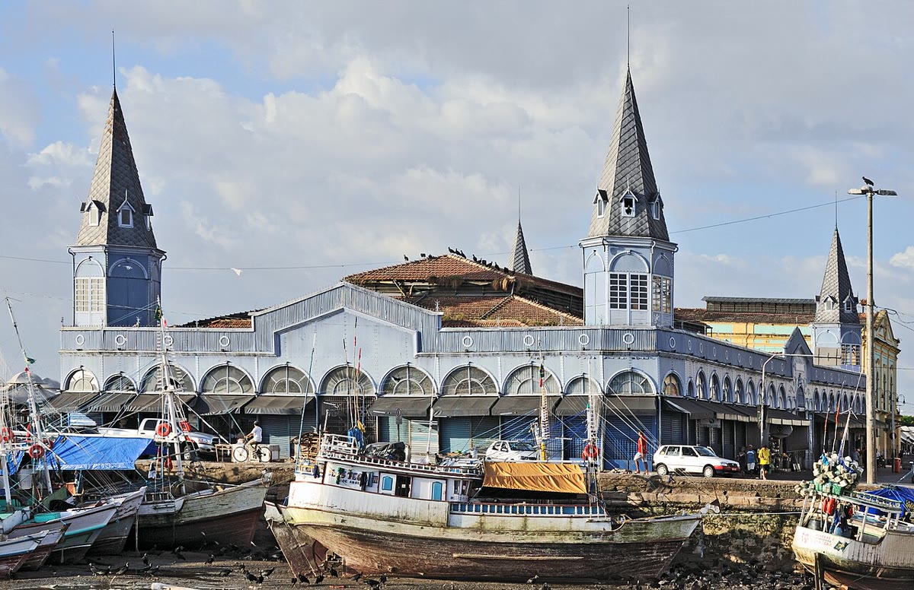

Economia · 26 de outubro
Feira do produtor bate recorde de vendas no fim de semana
Movimento foi 32% maior que no ano passado; organização estuda ampliar área e criar transporte gratuito.

A Feira do Produtor de Vale Verde encerrou o domingo (25) com recorde de público e faturamento. Segundo a organização, 12 mil pessoas passaram pelo Mercado Municipal nos três dias, 32% mais que no ano passado, e as vendas somaram R$ 680 mil.
Oitenta e quatro produtores participaram, entre hortifrútis, queijos, pães, mel e artesanato. A área de orgânicos, que estreou em 2025, dobrou de tamanho. Os preços ficaram, em média, 8% abaixo dos supermercados, segundo levantamento da própria feira.
Transporte e espaço
O sucesso trouxe problemas. No sábado, filas se formaram na entrada e parte dos visitantes estacionou em ruas próximas, irritando moradores. A organização estuda ampliar a área coberta e criar um transporte gratuito saindo de três bairros. “Queremos que a feira seja acessível a quem não tem carro”, disse a coordenadora Neide Barros.
Produtores comemoram, mas pedem mais estrutura. “Faltou gelo no domingo e a energia oscilou duas vezes. Se não melhorar, o próximo verão vai ser difícil”, afirmou o produtor Sebastião Lima, que vende tomates e pepinos.
“A feira cresceu porque o consumidor quer saber de onde vem o alimento. Agora precisamos crescer sem perder essa proximidade.”
Neide Barros, coordenadora da feira
Próximas edições
A feira acontece no primeiro e no terceiro fim de semana de cada mês, das 7h às 14h. A próxima edição será nos dias 7 e 8 de novembro, com uma programação de oficinas de compostagem e aproveitamento integral de alimentos.
A prefeitura informou que vai avaliar a proposta de transporte gratuito e a reforma do setor de carga e descarga do mercado. Um estudo de viabilidade deve ficar pronto em dezembro. A organização espera também ampliar o número de produtores para 100 em 2027.